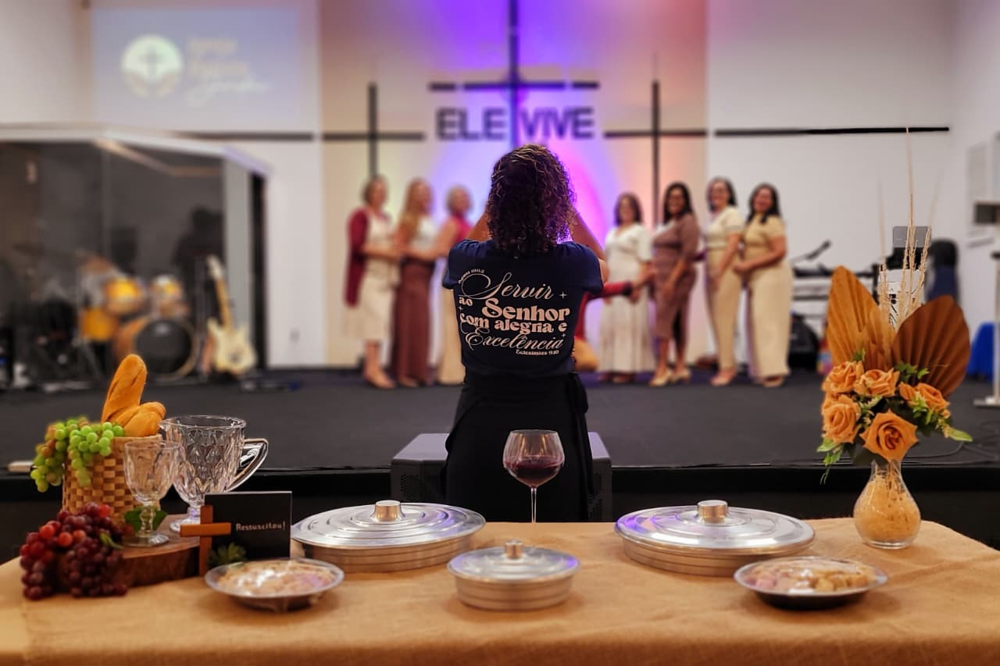
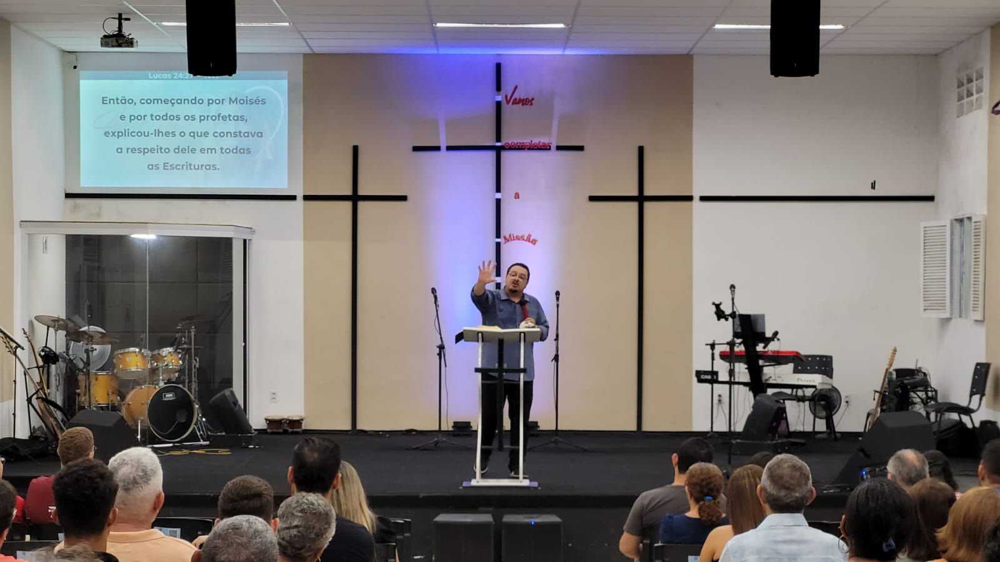
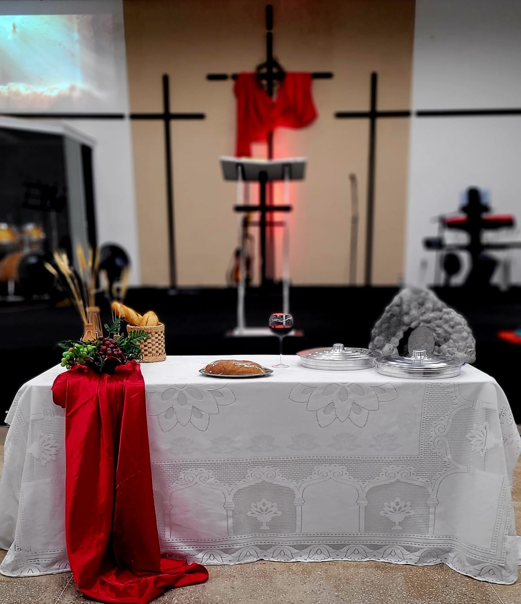
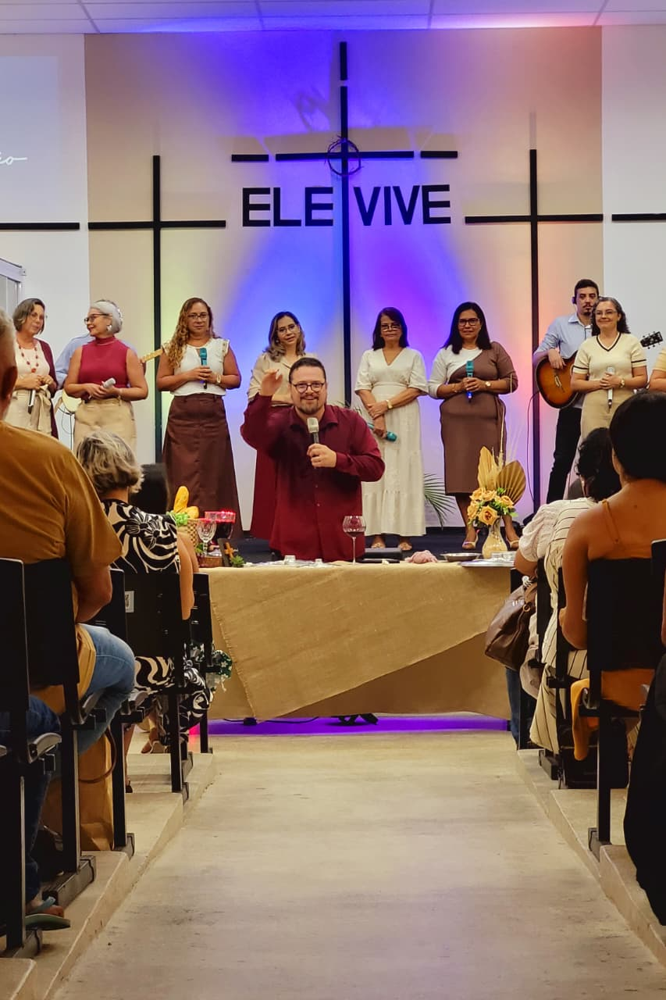
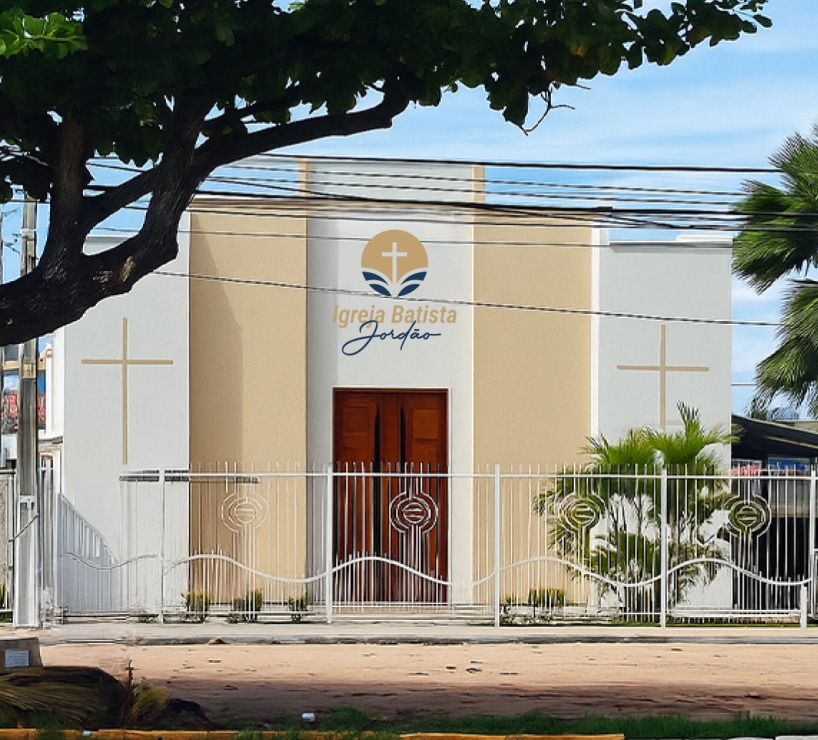

A Igreja Batista Jordão é uma comunidade fundamentada no amor de Cristo. Nosso propósito é acolher, cuidar e equipar pessoas para viverem uma fé autêntica e transformadora no seu dia a dia.
Acreditamos em uma espiritualidade leve, ancorada na graça, onde cada pessoa importa e tem espaço para crescer e servir, desenvolvendo relacionamentos saudáveis.
A nossa marca carrega uma mensagem profunda. A cruz no eixo do círculo representa Jesus no centro de tudo que fazemos. O desenho contínuo evoca o rio Jordão se abrindo: simbolizando os milagres, o batismo, o recomeço e a fé que faz o caminho onde parece não haver passagem.
Encontros aos domingos, focados em adoração sincera e na exposição prática da Palavra para abençoar todos os membros do seu lar.
Encontros as quartas-feiras, onde nos reunimos como igreja para clamar, agradecer e fortalecer nossa fé por meio da oração comunitária
Um espaço vibrante e acolhedor para a juventude viver a fé de forma relevante, com música, comunhão e debates cristãos reais.
Ambiente seguro e criativo onde as crianças aprendem os princípios bíblicos brincando. Preparamos a próxima geração com amor.
Um espaço de acolhimento, conexão mútua e crescimento espiritual. Compartilhamos jornadas, fortalecemos laços e descobrimos o propósito de Deus para nossas vidas.
Encontros focados no desenvolvimento de uma liderança íntegra e saudável. Juntos, compartilhamos desafios, fortalecemos a fé e crescemos como amigos, pais e profissionais.




